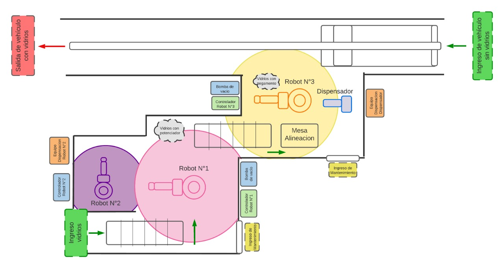

Proyecto A3
Proyecto A3Diseño de la Celda Robotizada
- Se realizó un estudio preliminar de la planta y la secuencia mostrada en el video "Grenzebach | Automatic Front, Side and Rear Glass Decking at Sprinter Assembly Line", con el cual se lograron identificar características propias del proceso, cantidad de robots utilizados, protocolo de funcionamiento y de seguridad presentes en la celda.
- Se realizó una identificación y caracterización de los procesos realizados por la celda propuesta, verificando el flujo de material y el espacio de trabajo utilizado.
- Utilizando la información de los procesos se realizó un plano base de como se pretendía organizar la celda, intentando asemejar el modelo propuesto en el video ya mencionado.
- Aplicar potenciador: En esta etapa los vidrios traseros entran a la estación de trabajo por medio de un conveyor, donde los vidrios se encuentran fijos en una posición gracias a un soporte que los mantiene vertical. Cuando el par de vidrios se encuentra al final del conveyor el primer robot utiliza un gripper de vacío para llevarlos hasta el espacio de trabajo del segundo Robot donde se encarga de aplicar el potenciador del pegamento usando trayectorias rectas y circulares. Por último, el primer robot posiciona el par de vidrios verticalmente en el segundo conveyor.
- Aplicar pegante: En esta etapa de nuevo el par de vidrios al llegar al final del recorrido del conveyor son sujetados por el tercer robot con un gripper de vacío para después aplicar el pegante usando un dispensador de pegamento que está fijo en un poste. En este paso la trayectoria para aplicar el pegamento lo hacen el par de vidrios, mientras que en la primera etapa la trayectoria la realizaba el segundo robot.
- Instalación de vidrios: En esta etapa el tercer robot ensambla los dos vidrios traseros a la van, la cual se desplaza en un conveyor especializado que se detiene para su respectivo ensamble y de esta forma continuar con su proceso de fabricación.
- Finalmente, se implementa el diseño desarrollado en Robotstudio y se evalúa su factibilidad para efectuar posibles correcciones y llegar a un layout definitivo que permita un buen flujo del material y desempeño del proceso.
- En el layout definitivo se incluyen los requerimientos de seguridad correspondientes en donde se delimitan las áreas de trabajo de los robots y el flujo de material para prevenir colisiones entre los elementos en movimiento y limitar el acceso del personal mientras se ejecutan las tareas para prevenir accidentes. Estas vallas cuentan con puertas para acceder de manera segura a la celda y realizar el respectivo mantenimiento de los elementos de la celda. Adicionalmente, cuentan con ventanas para la supervisión del proceso. Pensando en la mejor disposición, los elementos fijos de la celda son ubicados en la parte exterior de las vallas de seguridad para un fácil acceso, estos elementos son los controladores, los flexpendant, y los equipos de dispensación de los adhesivos, que incluyen una bomba y un depósito de material.

Para eso se sigue un flujo de trabajo se puede describir en tres etapas principales, la primera tiene como objetivo aplicar el potenciador del pegamento, la segunda aplicar el pegamento y la tercera es la operación de instalación de los vidrios en la van. Cada etapa se describe a detalle a continuación.